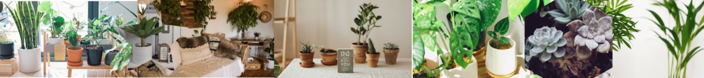
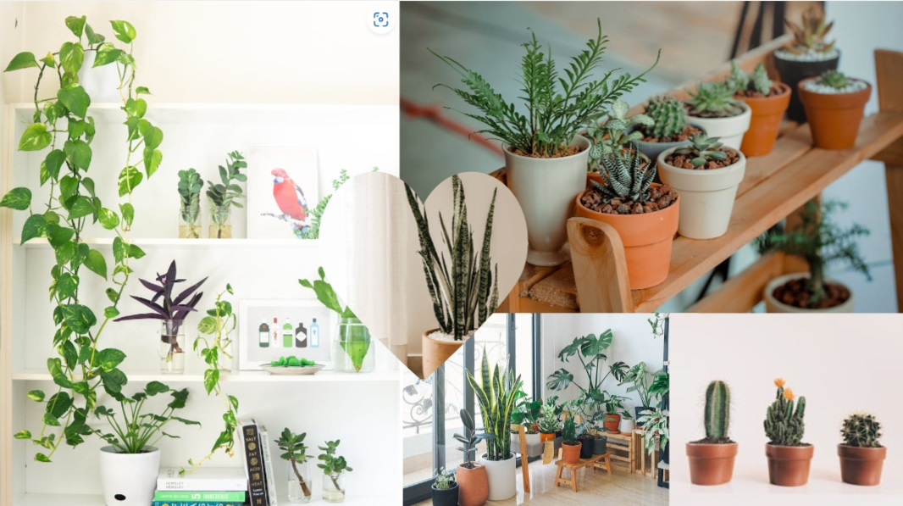

Getting Started
Indoor plants are a great way to get started on your gardening journey.

Houseplants are a fantastic addition to any home. They clean your air, brighten your mood, and help you cultivate your green thumb, even if you don’t have any outdoor space. Nearly any plant can be grown indoors, but there are some tried and true varieties that have earned their spot as the most popular houseplants out there.
Click to discover the Beginner's Guide
Houseplants in Ireland
When it comes to house plants, Ireland is one of the best spots in the world to grow them. Not only is the climate temperate and inviting to many species, but there are a variety of options available to suit every taste and décor. Some of the top house plants to grow in Ireland include Ivy, Spider Plant, Peace Lily, Snake Plant, and Aloe Vera. All of these plants require different levels of light and temperature, so make sure you do your research to find out what works best for your particular situation. In addition to choosing the right plants for your home, you’ll want to make sure you water them regularly and watch for pests. Fertilizing when necessary is also essential for strong, healthy plants. With these tips in mind, you should have no trouble creating a lush, thriving indoor garden for your home. Get out there and start growing
Find out More Here

One of the First Choices to decide when buying a plant is where you want it to be located in your home. This is a very important consideration when purchasing your plant. Many plants have specific environments that they would consider ideal and others that would not be suitable. Whether the space is sunny or in the shade can all be factors to consider when choosing the right plant for you. Remember your plant doesn't just have to be decorative or flowering you can also choose to grow herbs or some kinds of veg. The choice is up to you.
Find out more on taking care of indoor plants